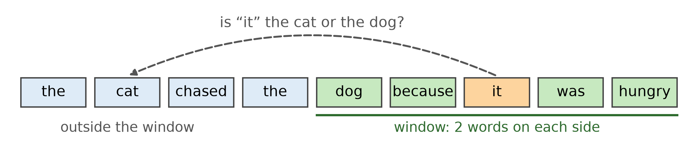
Advanced Machine Learning
This slide deck is still under active development. Expect changes before it is finalized.
Every word looks at every other word
Earlier, word2vec learned embeddings from a window of 2 words on each side.

The question:
Can every word look directly at every other word in its own sentence?
Every word in the input relates somehow to every other word in the input – let’s ask how important they are to each other.
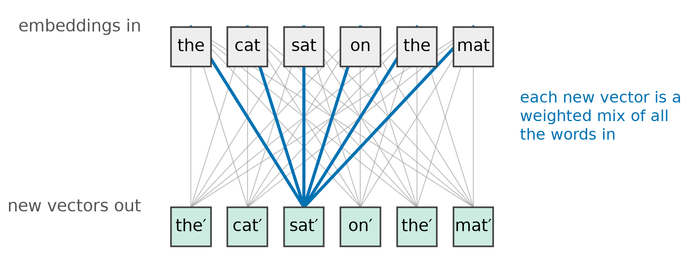
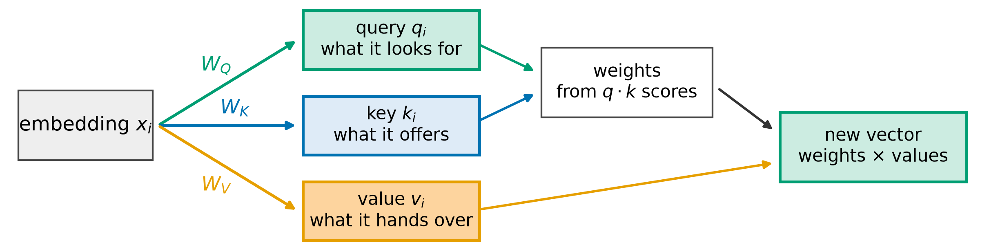
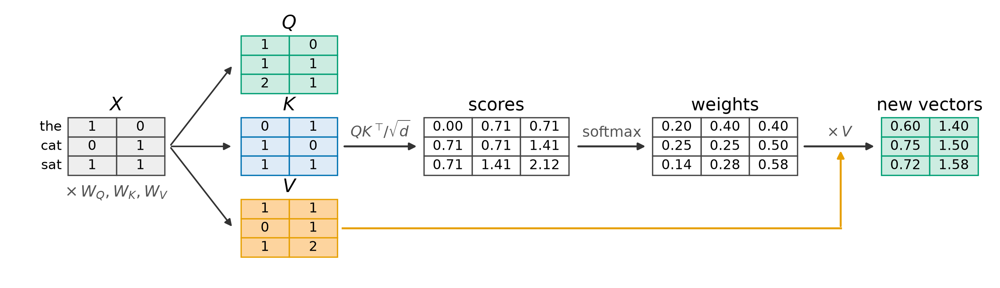
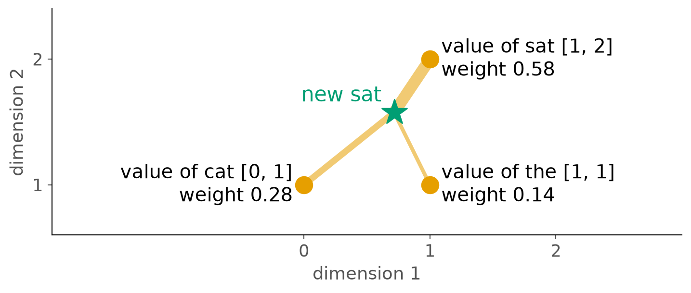
\text{new sat} = 0.14 \cdot [1, 1] + 0.28 \cdot [0, 1] + 0.58 \cdot [1, 2] = [0.72, 1.58]
\text{Attention}(X) = \text{softmax}\!\left(\frac{Q K^\top}{\sqrt{d}}\right) V
Q = X W_Q \qquad K = X W_K \qquad V = X W_V
The same score, softmax and weighted average as last time, for all the words at once. The result has the same shape as X: a new, context-aware vector for every word
W_Q = \begin{bmatrix}1&0\\1&1\end{bmatrix} \qquad W_K = \begin{bmatrix}0&1\\1&0\end{bmatrix} \qquad W_V = \begin{bmatrix}1&1\\0&1\end{bmatrix}
| Word | Embedding x | Query q = x W_Q | Key k = x W_K | Value v = x W_V |
|---|---|---|---|---|
| the | [1, 0] | [1, 0] | [0, 1] | [1, 1] |
| cat | [0, 1] | [1, 1] | [1, 0] | [0, 1] |
| sat | [1, 1] | [2, 1] | [1, 1] | [1, 2] |
The query of “sat” is:
[1, 1] \cdot W_Q = [1\cdot1 + 1\cdot1, \; 1\cdot0 + 1\cdot1] = [2, 1]
\text{score}_{ij} = \frac{q_i \cdot k_j}{\sqrt{d}} \qquad d = 2
| Word looking (query) | Key: the | Key: cat | Key: sat |
|---|---|---|---|
| the | 0.00 | 0.71 | 0.71 |
| cat | 0.71 | 0.71 | 1.41 |
| sat | 0.71 | 1.41 | 2.12 |
The score of “sat” looking at “cat” is:
\frac{q_{sat} \cdot k_{cat}}{\sqrt{2}} = (2\cdot1 + 1\cdot0) \div \sqrt{2} = 2 \div \sqrt{2} = 1.41
| Word | Weights on (the, cat, sat) | New vector |
|---|---|---|
| the | 0.20, 0.40, 0.40 | [0.60, 1.40] |
| cat | 0.25, 0.25, 0.50 | [0.75, 1.50] |
| sat | 0.14, 0.28, 0.58 | [0.72, 1.58] |
The new vector for “sat” is its weights applied to the values:
0.140\cdot[1, 1] + 0.284\cdot[0, 1] + 0.576\cdot[1, 2] = [0.72, 1.58]
| Recurrent network | Self-attention | |
|---|---|---|
| Processing | Sequential: each word waits for the one before | Parallel: all words together |
| Steps for one word to reach another | Up to n | 1 |
| Pairwise scores | None | n \times n, one per pair |
| Order of the words | Built in | Not known |
class SelfAttention(nn.Module):
def __init__(self, dim):
super().__init__()
self.q = nn.Linear(dim, dim) # W_Q
self.k = nn.Linear(dim, dim) # W_K
self.v = nn.Linear(dim, dim) # W_V
def forward(self, x): # x: (batch, n, dim)
q, k, v = self.q(x), self.k(x), self.v(x)
# 1. score: every word's query against every word's key
scores = q @ k.transpose(1, 2) / math.sqrt(x.shape[-1]) # (batch, n, n)
# 2. softmax over the words each one looks at
weights = scores.softmax(dim=-1)
# 3. weighted sum of the values
return weights @ v # (batch, n, dim)Self-attention does not know the order
The same three words in a different order: (sat, cat, the) instead of (the, cat, sat).
| Word | New vector, order (the, cat, sat) | New vector, order (sat, cat, the) |
|---|---|---|
| the | [0.60, 1.40] | [0.60, 1.40] |
| cat | [0.75, 1.50] | [0.75, 1.50] |
| sat | [0.72, 1.58] | [0.72, 1.58] |
The question:
How can self-attention tell “dog bites man” from “man bites dog”?
Add a position signal to each word’s embedding before attention, so the same word at a different position looks different.
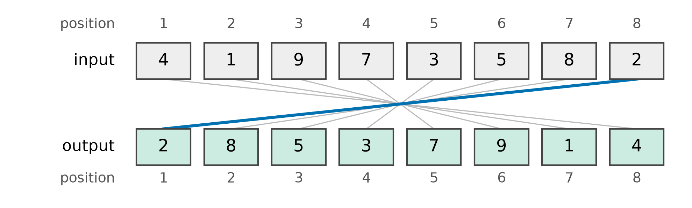
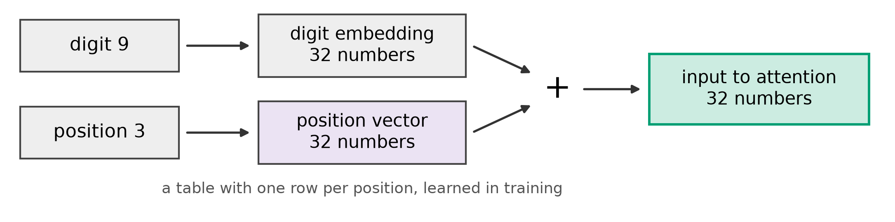
PE_{(pos,\, 2i)} = \sin\!\left(\frac{pos}{10000^{2i/d}}\right) \qquad PE_{(pos,\, 2i+1)} = \cos\!\left(\frac{pos}{10000^{2i/d}}\right)
| Position | Dim 0 | Dim 1 | Dim 2 | Dim 3 |
|---|---|---|---|---|
| sin(pos) | cos(pos) | sin(pos/100) | cos(pos/100) | |
| 0 | 0.00 | 1.00 | 0.00 | 1.00 |
| 1 | 0.84 | 0.54 | 0.01 | 1.00 |
| 2 | 0.91 | -0.42 | 0.02 | 1.00 |
| 3 | 0.14 | -0.99 | 0.03 | 1.00 |
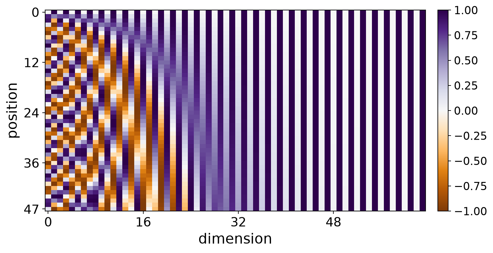
| Model | Digits right | Whole lists right |
|---|---|---|
| No position signal | 31% | 0% |
| Learned positions | 100% | 100% |
| Sinusoidal positions | 100% | 100% |
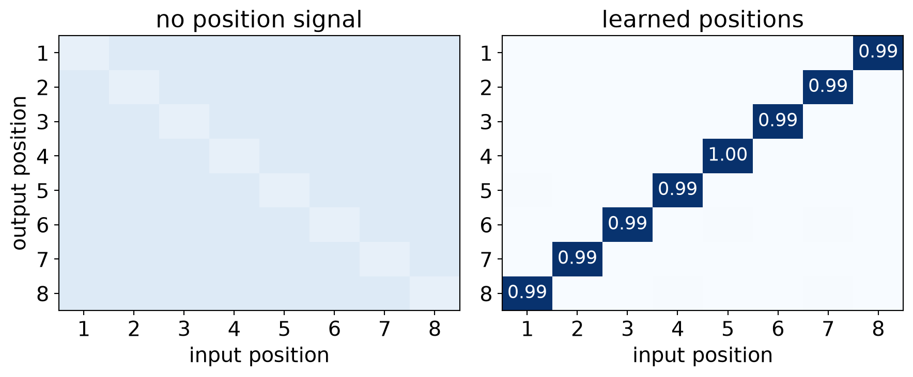
class Embed(nn.Module):
def __init__(self, vocab, dim, max_len):
super().__init__()
self.tok = nn.Embedding(vocab, dim) # one vector per word (or digit)
self.pos = nn.Embedding(max_len, dim) # learned positions: one vector per position
def forward(self, ids): # ids: (batch, n)
positions = torch.arange(ids.shape[1]) # [0, 1, ..., n-1]: the position of each word
return self.tok(ids) + self.pos(positions) # the word, plus where it is: (batch, n, dim)self.pos is a table of max_len vectors, trained like the word embeddings, and self.pos(positions) looks up one vector for each positiontorch.arange just lists the positions 0 to n−1. They are the same for every list, so the same position vectors are added to every list in the batchself.pos is replaced by a fixed table built from the formula. Nothing is learned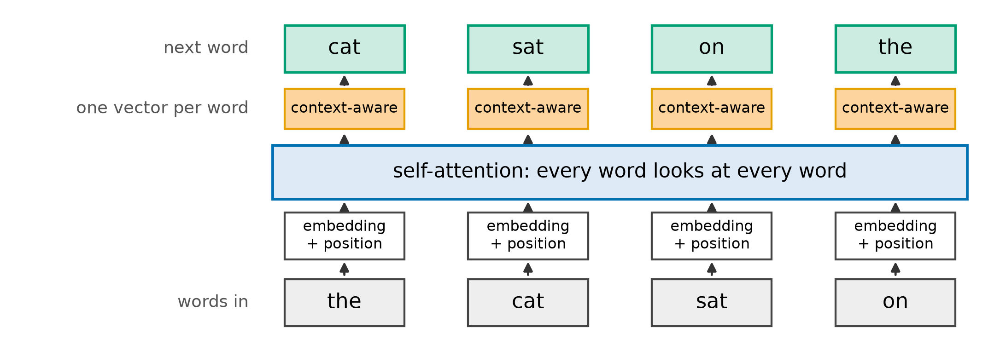
Do not look at the future
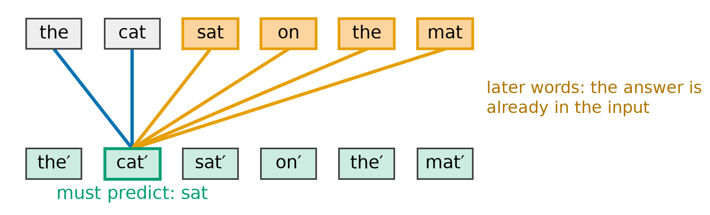
The question:
How do we stop a word from looking at the words after it?
Hide the future: give every later word a weight of 0.
\text{softmax}\!\left(\frac{Q K^\top}{\sqrt{d}} + M\right) V \qquad M = \begin{bmatrix} 0 & -\infty & -\infty & -\infty \\ 0 & 0 & -\infty & -\infty \\ 0 & 0 & 0 & -\infty \\ 0 & 0 & 0 & 0 \end{bmatrix}
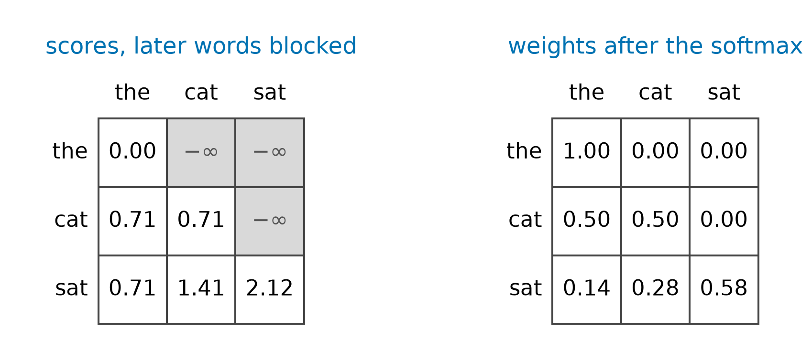
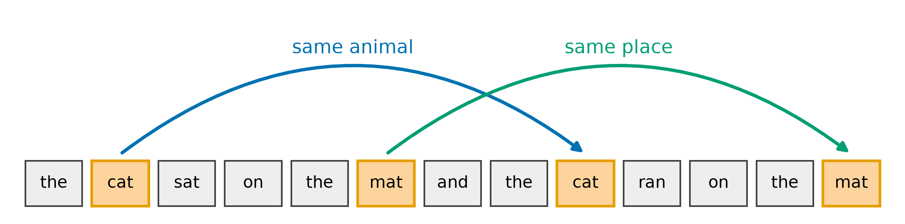
| Model | Animal copied | Place copied |
|---|---|---|
| Attention with the mask | 100% | 100% |
| Attention without the mask | 74% | 72% |
| No attention | 16% | 16% |
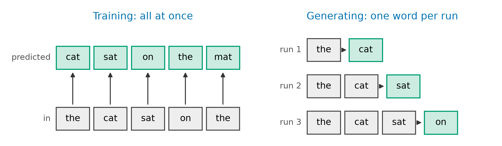
def forward(self, x): # x: (batch, n, dim)
q, k, v = self.q(x), self.k(x), self.v(x)
scores = q @ k.transpose(1, 2) / math.sqrt(x.shape[-1]) # (batch, n, n)
# the causal mask: later words get minus infinity
n = x.shape[1]
later = torch.triu(torch.ones(n, n, dtype=torch.bool), diagonal=1)
scores = scores.masked_fill(later, float("-inf"))
weights = scores.softmax(dim=-1) # later words get weight 0
return weights @ v # (batch, n, dim)torch.triu(..., diagonal=1) marks the cells above the diagonal: the pairs where the key comes after the querymasked_fill puts -\infty in those cells, so the softmax gives them weight 0. Everything else is the plain self-attention from beforeLooking in several places at once
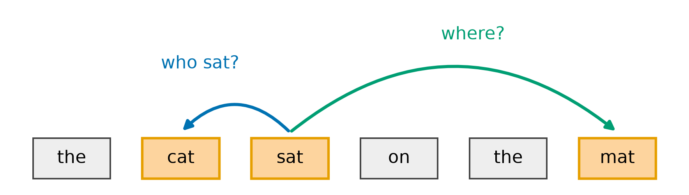
Run several attentions side by side, so each can look in different places for different reasons.
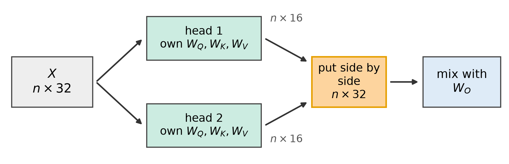
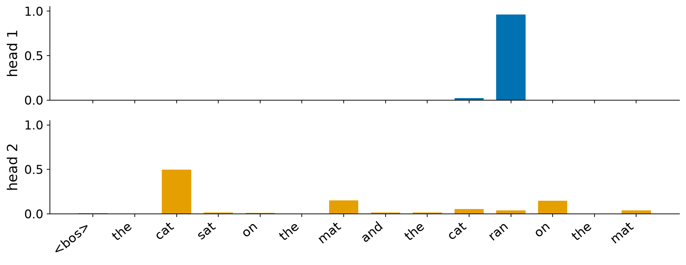
def forward(self, x): # x: (batch, n, dim)
b, n, dim = x.shape
h = dim // self.heads # numbers per head
# cut each query, key and value into heads: (batch, heads, n, h)
split = lambda t: t.view(b, n, self.heads, h).transpose(1, 2)
q, k, v = split(self.q(x)), split(self.k(x)), split(self.v(x))
scores = q @ k.transpose(-2, -1) / math.sqrt(h) # an n x n table for every head
out = scores.softmax(dim=-1) @ v # (batch, heads, n, h)
# put the heads side by side and mix them
return self.out(out.transpose(1, 2).reshape(b, n, dim))self.q, self.k, self.v still make 32-number vectors. split cuts each into 2 pieces of 16, one per head, and the matrices are learned so each head ends up with its own queries and keysself.out is W_O. Our model adds the causal mask from before, on the scores line| Piece | Problem | What it does |
|---|---|---|
| Self-attention | A word needs the other words in its sentence | Every word scores every other word and takes a weighted average of their values |
| Position signal | Self-attention cannot see the order | Add a vector for each position to the embeddings |
| Causal mask | A word could read the answer in training | Block the scores for later words with minus infinity |
| Multiple heads | One attention is one pattern | Several attentions in parallel, mixed by W_O |
CST463 · Advanced Machine Learning